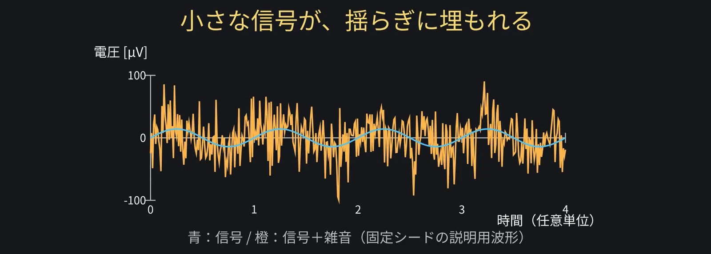
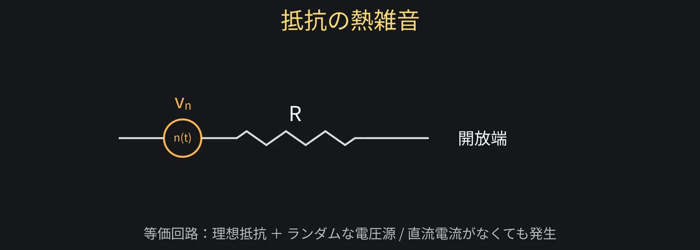
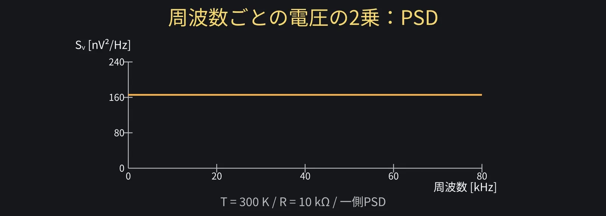
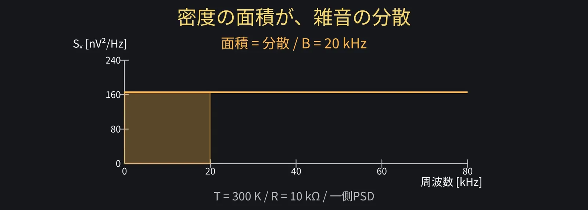
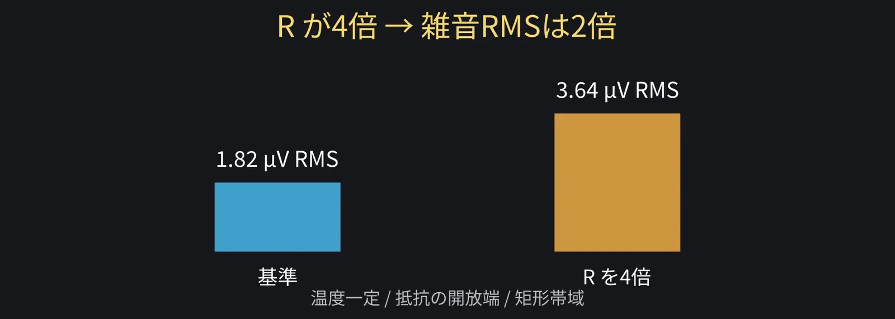
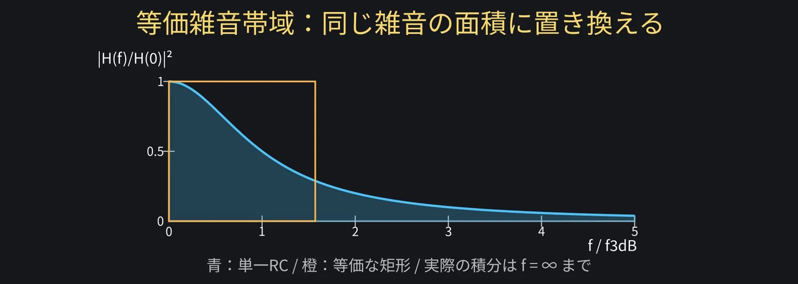
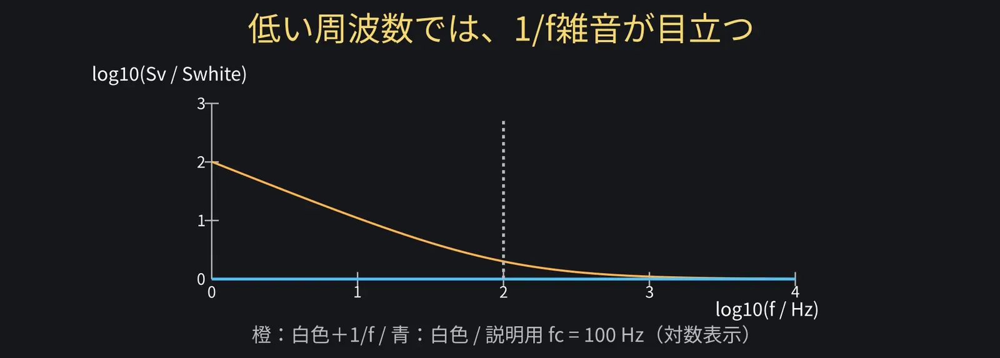
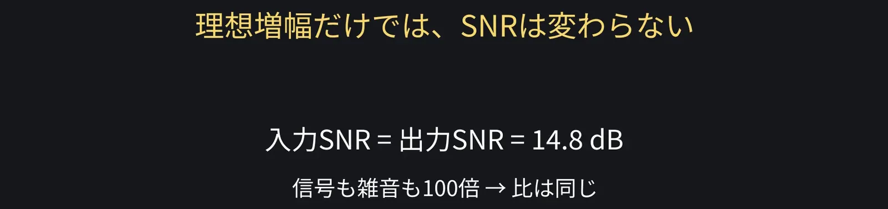

第9回
雑音の基礎：小さな信号は何に埋もれる？
アナログ回路入門シリーズ第9回。小さなセンサ信号が雑音に埋もれる困りごとから、
平均とRMS、熱雑音のPSD、密度の平方根、帯域内の雑音、等価雑音帯域、
独立な雑音の二乗和、MOSFETの熱雑音と1/f雑音、入力換算雑音、SNRを学びます。
第8回の帯域の知識を使い、次回のオペアンプへつなぎます。
1導入：小さな信号が揺らぎに埋もれる 動画 0:00
ずんだもん
小さなセンサ信号が、波形の揺らぎに埋もれるのだ！測定の課題がピンチなのだ！

ずんだもん
増幅すれば、信号だけ大きくなって見えると思っていたのだ。
2外来の妨害と部品自身の雑音 動画 0:17
ずんだもん質問
外からの妨害を防いでも、部品の中から雑音が出るのだ？

3平均とRMS 動画 0:46
ずんだもん質問
正と負に揺れるなら、平均すれば0になって消えるのだ？
ずんだもん
2乗するから、正負で打ち消されないのだ！
4PSD・熱雑音・密度の平方根 動画 1:08

ずんだもん質問
抵抗が大きいほど、電圧の雑音も大きくなるのだ？
ずんだもん
nV/√Hzと書いてあっても、そのまま波形の電圧ではないのだ！
5帯域内の雑音を計算する 動画 1:56

ずんだもん
20kHzの範囲を足すと、雑音は約1.82µV RMSになるのだ！

ずんだもん
必要以上に広い帯域は、余分な雑音まで通すのだ！
6等価雑音帯域 動画 2:52

ずんだもん
前回の−3dB帯域を、そのままBに入れないようにするのだ。
7独立な雑音と二乗和 動画 3:16
ずんだもん
1.82µVが2つなら、合計は約2.57µV。3.64µVではないのだ！
8MOSFETの熱雑音と1/f雑音 動画 3:40

ずんだもん
平方根の密度なら、1/√fで下がるのだ。グラフの単位も見るのだ！
9入力換算雑音とSNR 動画 4:31
ずんだもん質問
入力の雑音も100倍にしたら、出力の雑音も100倍なのだ？
ずんだもん
両方100倍なら、比は同じ。増幅するだけではSNRは良くならないのだ！

ずんだもん
必要な帯域に絞り、抵抗と素子を選ぶ。信号を失わない条件も確認するのだ！
10まとめ 動画 5:40
ずんだもん
独立な雑音は2乗して足す。入力換算と、帯域をそろえるのだ！
ずんだもん：利得だけじゃなく、雑音の大きさとSNRも書けば、測定のレポートが完成なのだ！
ずんだもん
ご視聴ありがとうなのだ！高評価とチャンネル登録もよろしくなのだ！